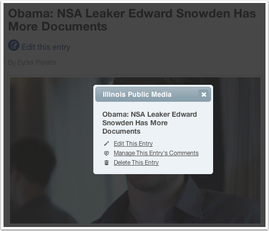
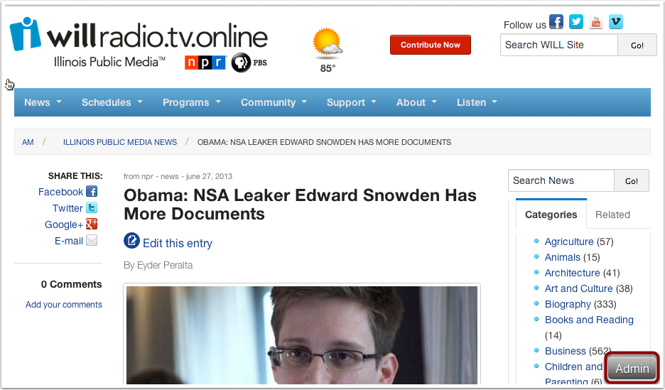
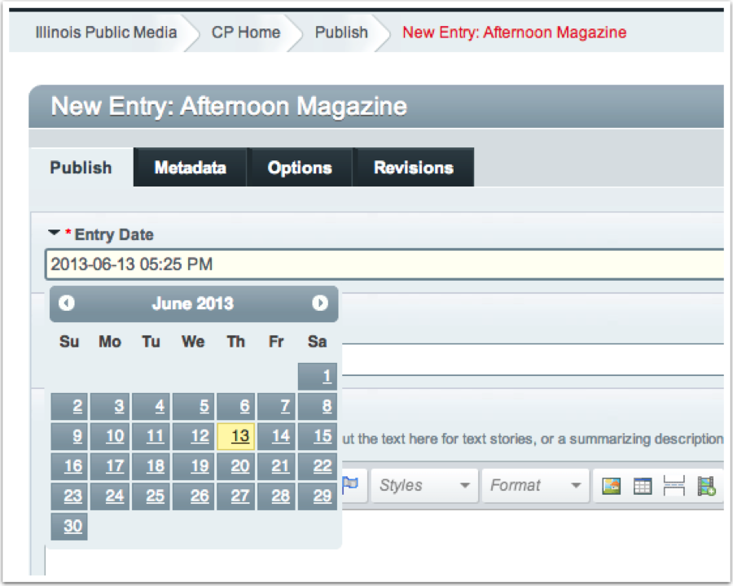
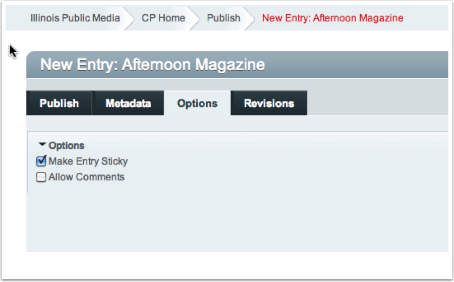
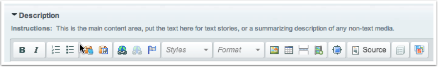
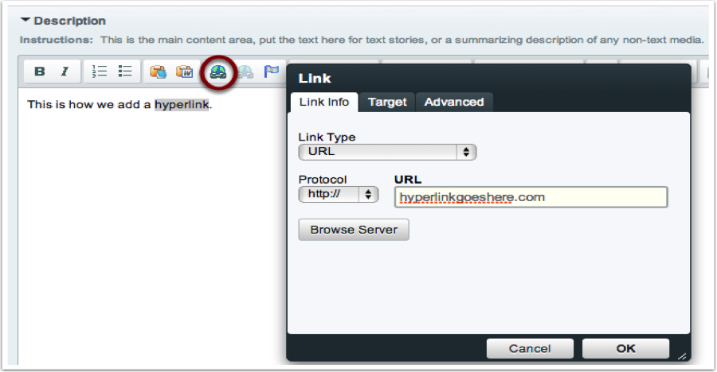
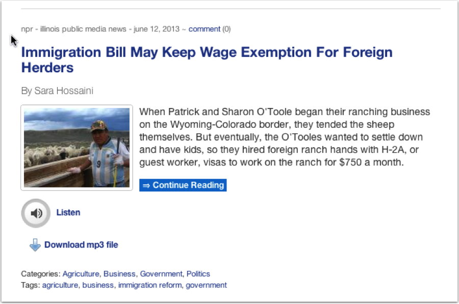
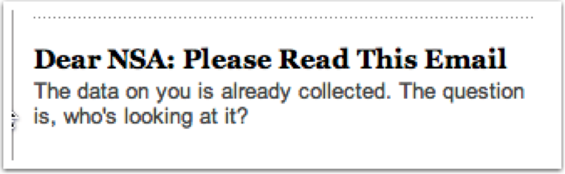
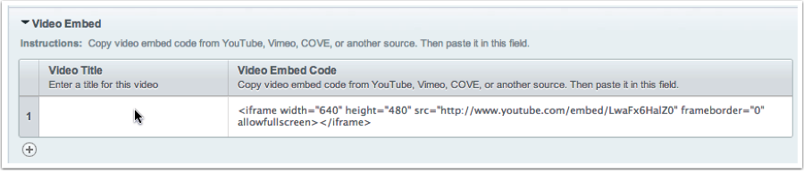
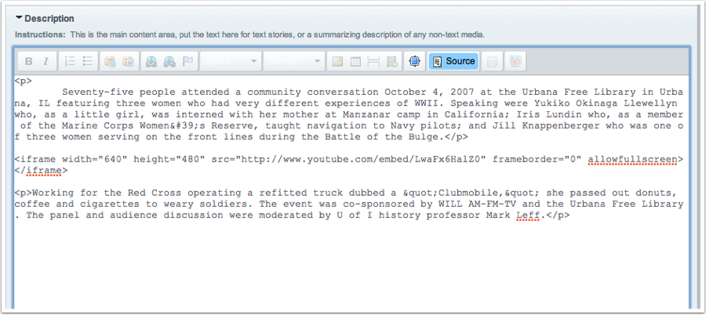

How to Publish Web Content: details on creating and editing content of all types
You publish website content using our Content Management System by filling out Entry forms containing a number of different fields.
There are a number of different field types: text, rich text, image, upload, etc. This section of the manual covers the details of using each field. As a creator, you have freedom to create and publish great content in our system, but there are important requirements and limitations. We want to give users an awesome experience, but also a consistent one. Read and follow these instructions to reach the maximum possible audience, and make your job easier!
You create website content by:
Access to the CMS is managed by the Webmaster, who will grant access to different sections of the site for different roles. When you log in, you have access to the sections assigned to you but not other sections.
Log in here: http://will.illinois.edu/admin
If you forget your password, please use the “Forgot your password?” link on the login page. The Webmaster cannot reset your password, but you can easily do this any time.
Once you log in, you can create content in your site sections, and you can edit your existing content.
Once you are logged in to the CMS, you can edit existing entries directly from the front-end of the website. One each Entry page, beneath the Title of the entry you'll see a link to Edit this entry:
A popup box then gives you options to edit they entry, review comments, or delete the entry:
You can also access the complete CMS Control Panel by clicking the Admin button in the lower-right corner of the browser:
Remember that the Edit and Admin links only display if you are already logged into the CMS. Users who just visit the site will never see these links.
At the very top of every Entry form is a field labeled Entry Date. It defaults to “today” and in many cases you don’t need to change it. (In some sections, Entry Date is located in a separate tab in the Entry form labeled “Date”.) If you need to change the Entry date, click inside the field and up pops a date picker:
You can edit the date and time by hand, instead of just using the date picker. But this is very important:
If you are adding an entry for a Radio or TV program in the past or future, be sure to select the date of broadcast. That date will appear on the web page with that program, and sort the entry correctly by date on List View pages.
Almost all entries on List View pages are displayed with the most recent at the top, and earlier entries sorted below that in descending order. Think of this like a Blog; newer entries push the older ones down the page. The only exception is if you make an entry Sticky, which keeps it at the top of the page. (If more than one entry is made Sticky, the sticky entries will sort themselves by date.)
To make an entry Sticky, click the Options tab and check the box labeled Make Entry Sticky:
You can create an entry and give it an Entry Date any time in the future, and even specify it to the minute. Almost all sections of the site are set to NOT display “future entries,” so you can add entries for programs a week or month in advance and they won’t appear on the site until their Entry Dates.
Some sections of the site can also set Expiration Dates, so content can be “unpublished” from the site at a set date and time.
For most broadcast programs, this isn’t relevant since we want to maintain a permanent program archive. If an entry can be expired, you’ll see a field in the entry form for Expiration Date.
When you click into the Entry or Expiration Date field, a date picker pops up. Best to use this by clicking the actual date in the date picker. You can manually edit the Entry Date, but be careful not to mistype something because that will break the date of the entry. You can type in the date field, but you must stick to this format: “YYYY-MM-DD HH:MM AM”.
A good Title for each entry is extremely important. The Title is what first grabs people.
Title is like the headline for a news story: “Cubs Chairman Ricketts Threatens to Move Team.” It catches eyes, but also search engine crawlers. Importantly, title also becomes the last part of the URL for that entry page:
http://will.illinois.edu/news/story/cubs-chairman-ricketts-threatens-to-move-teamAbove all, make the title mean something about the content. Please don’t use anything generic like “Program for June 3, 2013.” You might think a user would understand it in context. But if the user is a search service crawling the site, all it sees is a link for “Program for June 3, 2013,” and that’s useless for making the actual content searchable. It also drags down our overall search engine ranking by making our site hard to index.
Think of it like this: the Entry Title is what shows up on Google. How do you want your content to be displayed on search results pages?
Our website is set up to display a “Listen” button if you’ve added an mp3 audio file to a given entry. (Please note: ONLY mp3 files will work!)
There are several ways to add an Audio file:
For Pages entries, the title may be simpler, like About WILL.
You can optionally add a Description of the audio file. This will appear just above the audio player, so users can understand without ambiguity what it is they are listening to. But in many cases, this isn’t needed, because the Entry Title also will appear in the audio player.
Any text entered in the Byline will appear at the top of the entry on web pages, e.g. “by John Adams.” Mostly used for News stories.
The Description holds the main part of your entry. It should consist mostly of text, but can contain many other things: images, audio, video, and embed code. But unless you are writing a very rich and complex multimedia article, please use the Image, Audio, and Video fields for those things. Description should be the text of your entry.
Note the formatting strip at the top of the Description field:
Most of the options may be obvious: Bold and Italic work just like in Word and other text editing software. You can add hyperlinks to text by using the link button:
Here’s a story as displayed on the List View page for News. Note the “Continue Reading” link:
For entries with lots of text, we can split the text so only the first part of it appears on the List View page. The Continue Reading list automatically appears, and the full text is displayed on the full Entry page for that story.
You can upload a PDF or other text document, and a link will appear on the web page for that entry allowing the user to download that document. To upload a document:
Since the document is now on our web server, you can share a link to it anywhere you want: email, social media, and other web pages:
People are drawn to great images, and the web is a great place for them. Ideally we would add one or more great images for each Entry. This isn’t always possible, but it is a goal for the WILL site.
Even more important is consistent image size and shape. A List View page containing a wide variety of images with different sizes and shape looks jumbled and chaotic. Some variation is aesthetically pleasing, but only within a defined range of variations. (A great example is http://www.npr.org)
All you have to do is upload a great image into the Entry form, and the CMS creates all these sizes automatically. The image you upload should be 800x600 at 72dpi, and the CMS does the rest.
Images you upload are displayed in different sizes on List View page and full Entry pages, on the Home page, and various other places.
If you add links they will appear on the web page. To do this:
If the News story was created by someone other than Illinois Public Media, use the dropdown list to select the source. If this is a new source and isn’t on the list, contact the Webmaster.
Currently, very few Entry forms include the People field but we will be expanding this.
The purpose is to add really good metadata about the People relevant to the entry, including people interviewed, and people who produced the content. This makes our web content more search-engine friendly, and is used in things like RSS feeds and to make our web applications more powerful in many ways. If proper names are already contained in the Description field, it may seem redundant to repeat them in the People field, but actually it’s pretty important. As we add the People field to more Entry forms, we’ll need content authors to use them.
Look at http://npr.org, and notice what’s under the main headlines. That’s a Short Title, and it amplifies on the headline to help the user understand the story subject. Here’s a classic example from npr.org:
Just like on NPR, Short Titles will appear just under our headlines. Use them wisely!
Square Thumbnails appear only on the Home pages, including the WILL Highlights/sidebar, News, Focus, Live & Local, and other local programs that have presence on the Home pages. They are designed to fit the small space there.
The most important thing to know about adding them to Entries is this:
Otherwise, adding Square Thumbnails is the same as adding regular Images.
If you add a Text Transcript, a link to download it will appear on the Entry page. Select a transcript from the Text Transcript dropdown, or type in a keyword to search for the transcript you want.
But wait, you say: What if I just created a new Transcript and it isn’t in the dropdown list? You have to add the new transcript by creating an Entry in the section call Text Transcripts. It will then appear in the dropdown list and be available for the entry you want to attach it to.
We will likely do much fancier things with Text Transcripts in the future; we’ve only started to begin using them.
Adding video to Entries is easy: just paste in Embed code from YouTube, Vimeo, COVE, or any other standard video hosting site into the Video Embed field:
You can optionally add a Video Title, which will appear as a header above the video on the web page. Often this isn’t needed, and may seem redundant, because the embedded video itself will display the title.
You can add more than one video per entry, but they will appear one after another on the web page. To get around this, you can also embed video directly in the Description field, and place it where you want in the body of text. This requires that you use the Source button in the Description field:
Be careful when editing in the Source view! Do not edit text there, or you risk changing something about the HTML code that could utterly break the web page for this entry. You can paste in the Video Embed code, which consists of the iframe code you see above. If you try anything fancier and get into trouble please contact the Webmaster right away.